DMG-CPU Cells Reference
This document provides information about the cells found in the Gameboy DMG-CPU-B die shot. It builds on the work of Furrtek, the information found in his DMG-CPU-Inside repository.
I was in the process of tracing back all the connections from the CPU and was constantly encountering cells for which the cell zoo JPG wasn't providing the pinout, so I wanted to have them all documented once and for all, to make life easier!
Please report any errors I made here.
- Basic logic gates
- Compound logic gates
- Arithmetic gates
- Tri-state drivers
- Storage elements
- I/O buffers
- Other
Basic logic gates
INVERTER gates
INVERTER - Variant A
Simple inverter.
 |
|

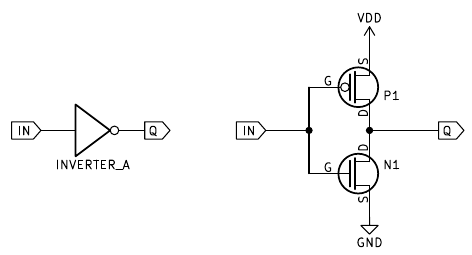
Instances: ABAF ABEZ ABOL ABUP ABUR ACOR ADAH ADAR ADOK AFAT AFEC AFEP AGET AGUR AHOF AJAX AKAF AKOL AKUG ALES ALOP ALYP AMUN AMYG APAM APAT APUV AROP AROV ARUC ARYF ARYS ASAD ASYP ASYS ATAG ATAR ATEC ATEZ ATUP ATUS ATYP ATYV AVUN AWOH AXAD AXYN AZEG AZOR AZYB BACA BADY BAFU BAGY BAJA BAKO BALU BALY BAMA BANE BARU BASE BASU BATA BAVU BAWA BAZE BEBA BEDE BEFA BEJE BEKA BELA BELE BELO BEPE BERO BETE BODE BODO BOFE BOFU BOFY BOGE BOJO BOKA BOKY BONE BOPO BOXY BUCO BUCY BUDA BUDU BUFE BUFO BUGO BUGY BUKA BUKO BUTY BUWA BUWE BUWY BUXO BUXU BUZE BUZY BYFU BYGO BYHO BYJO BYKO BYLO BYMA BYMO BYMY BYRU BYSU BYVA BYVY BYXO BYZO CABE CACA CACU CAGE CALA CALU CAMU CAMY CANU CAPE CARA CATE CATY CAVO CAXU CEGE CEGU CELE CELO CEPO CEPY CETO CEXE CEXU COBA CODO COFU COGO COGU COJU COKE CONA CONE COPE COSA COSE COZY CUGO CULE CURE CURU CUSO CUTO CUWA CYBE CYBO CYGU CYKY CYLA CYLU CYMU CYPY CYTE CYWU DABU DABY DAFO DAJO DAKO DAKU DAPU DAPY DARE DASA DAVU DEBO DECU DECY DEFU DEGA DEGE DEHO DEKE DERO DERU DOCA DOKU DOPU DORU DOSY DOTU DOVO DUBO DUGE DUKA DUKE DULA DULO DUVO DYBA DYHU DYKE DYLU DYMO DYNA DYRO EBOS EDEL EDEN EDEP EJAD EKUD ELYG EMUT ENOB EPEK ERED EROG ERUM ETUK ETUV EWOT EZAS FABO FAJA FAJU FAKA FALU FAZO FEBY FEFO FEKA FEMO FEPU FERY FEVO FEXO FOFA FOGE FOHY FOKU FONE FUFO FUKE FUKY FULE FUME FURU FUVE FUXU FYCU FYRE FYRY FYXO GABA GACE GADE GADO GAFY GAGO GAJA GAJY GALA GALU GAMY GASE GASO GAXO GAZE GECY GEFE GEKA GEKE GEKU GENO GENU GENY GEPA GEPU GESE GETO GEWY GEXE GEXY GOMA GONY GORY GOTE GOVE GUCY GUFA GUFO GUGO GULO GULU GUNU GUPO GURO GUSA GUSU GUVU GUZU GYBA GYDA GYFO GYPA GYSA GYVE GYVO HAKE HAPU HATO HAXE HEKY HELU HEMA HOTA HOXA HOXE HUCE HUDE HUNY HYFO HYNE JAGO JAKE JECO JEDE JERA JEVA JOLA JONE JOTU JUJU JULO JUTA JUTY JUWA JUZO JYBU JYJA KADO KAGE KAME KANU KAPE KARA KASA KASO KATY KAZO KEBO KEDO KEDY KEKE KENE KERE KESE KOKU KONY KOPA KOPU KOPY KOVA KOVO KUBY KUHA KURA KURY KUXU KYDU KYGY KYHO KYKO KYLO KYPE KYPU KYRU KYSA LADY LAFY LAHE LALA LAMO LAPA LAPE LASE LASY LAVA LAXE LEBU LEHO LEJA LEKE LESA LESO LESY LETY LEVO LEXY LOBY LOFU LOGO LOMA LOME LOMY LORU LOTA LOTE LOXA LOZA LOZO LUBO LUFA LUFE LUHE LUKU LULA LUMA LUMO LURA LUSU LYFE LYHA LYKU LYLE LYRY LYWE MABY MADY MASA MATE MAVU MEHE MEKE MEPA METE MEWY MEXA MEXO MOXE MUGY MUJY MULE MULO MUME MUVE MYFA MYFU MYMA MYRE MYSA MYVO NAKO NALE NARO NELE NENA NENY NEZE NOBO NOCU NOFU NOLO NOLY NUCA NUFA NUKO NUPO NYBE NYFO NYGO PAHA PALY PARU PEBY PEVO POFY POHU POLA PUCO PUSY PYRY PYSU RABO RACO RALO RAPU RATA RATU RAVE RAWA RAZA REDU REHO RENA RERY REVO REVY ROBY ROCO ROGE ROME ROMO RONA ROPY RORO ROSY ROTU ROVE ROXO RUCO RUKY RUMA RUNA RUNO RUVY RUZY RYBA RYCA RYCU RYFE RYGA RYJE RYJU RYLE RYSO RYVE RYZY SAME SANA SAPY SAZA SEBY SEFY SELU SERA SERY SOBA SOCA SOCY SOGY SOHA SOJA SOKA SOLO SONO SORE SOWO SUDO SUGY SULU SURA SYBO SYCY SYLO SYNY SYPY SYRO SYSA SYZO TAFU TAFY TAJO TAVA TAVE TAVY TEFY TEHE TENU TEPA TEPO TEPY TERA TOCA TOCU TOFU TOLA TOLU TOMU TONA TOSA TOTU TOVA TOVO TOVY TUBE TUDA TUJU TUKU TUNE TUVA TYCE TYCO TYTA TYTU UBET UBOT UCOB UDOR UMEK UMER UMOB UREK USEC UTOK UVAR UVYN UVYR VARO VATE VAVE VEFU VEPE VOBY VODE VOMY VOVA VOXU VUMU VUTY VYCO VYCU VYWA WABE WADO WADU WAFO WALO WAMY WANE WASE WATA WAZY WEBO WEFU WEKA WEKU WELE WEME WENY WEPO WERY WESA WEXY WOFO WOKU WOLA WOLO WUFA WUKY WUNA WUNU WUPA WURA WURY WUSE WUZO WYCE WYCO WYLU WYRU XABA XACO XADO XAGA XAHO XAHY XANO XARE XATU XEBE XEFY XEGA XELO XEMU XENA XENO XENU XEPO XERA XOGA XOLA XOTA XOVU XOWO XOZY XUBO XUCA XUCE XUHA XUHO XUHY XUJA XUJY XURA XUSY XYFY XYHA XYKE XYNY XYSO XYVA YAZA YFAG YFOC YFOT YMEV YPUR YRYV YVAL YVOK YVOM YWOK YZET ZABU ZAGE ZAGO ZAPA ZAPE ZEFU ZERA ZERY ZETE ZOCY ZOKE ZUFY ZURU ZUVY ZYBA ZYFO ZYRA ZYRO (746 total) (many inverters for clock complements are missing in this list)
INVERTER - Variant B
Inverter with higher driving strength.
 |
|

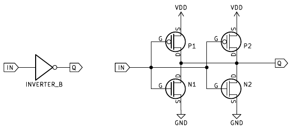
Instances: ABEF ABON ABUB ACAM ACOL ADAK ADAZ ADYR AFOB AFOP AHAL AHOC AJAS ALET ALUR AMEL APAR APUX ASAH ASOP ATAF ATAL ATEJ AVAP AZAR AZUB AZUL BAFY BANU BAXY BONO BORU BORY BOWE BUBU BURE BUTU BYFA CEDE CEHA COKA COTA CUNU CYKE DAPA DAWE DENO DENY DOSO DUCE DUGA DUPA DYDO DYFA DYKY DYLA DYTE DYTY EFUG ELAS EPYT ESUR EVAJ FADO FAME FUPA FURO FUTY GOGE GOWO GUGY GUMU GYGY GYMA HAPO HOVA HOVO KAGY KULY KYNY LABU LACA LALO LEFA LEKO LENA LEXE LOLY LOZE LOZU LUBY LUVE LUVO LUXA MOPA MOSU NUVA PEDU POGU PONY PORE RADA RADY RAGU RARE RAVO RAZO REFO REGE REKU REMY REVU RODU ROFA RUBE RULY RUMU RURA RYKY RYRO RYTY RYZE SAHA SARO SELA SETY SOKY SOLE SUZU SYSY TAGO TEGO TEXY TUJY UVYT VARY VOCA VUMY VYGA WALU WERA WERO WESY WEWU WUDA WUKO WUME WUTA WUTY XAPO XARO XAVY XAYO XAYU XEDA XEDU XOCE XOGY XORE XUPA XUPY XUQU XYME ZAXY ZODO ZOFE ZONE (167 total)
INVERTER - Variant C
Inverter with higher driving strength.
 |
|
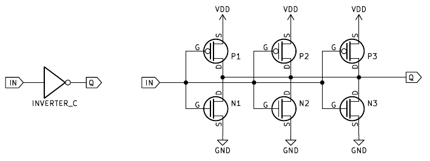
Instances: ABUZ ALER AMYT APEF APOV ARYL ATOK BECY BERU BUFY BYFE BYRY CAZU CULO EGOR EJYB FYNE HORU KEPY KOFO KYMO MECO MURE PURE RAHU RUZE RYPO TAPU TEDO VOTY VYPU (31 total)
INVERTER - Variant D
Inverter with higher driving strength.
 |
|
Instances: ADAD ASOT BEKO BOLO BUDE BUFA CUPA DOVA HAMA SEGU TALU ZEME (12 total)
INVERTER - Variant E
Inverter with higher driving strength.
 |
|
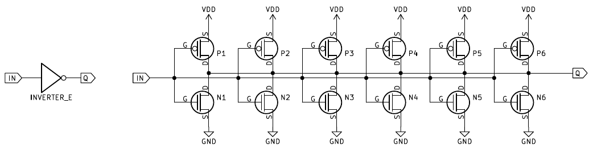
Instances: AGUZ AMUK AZOF BAVY BEDO BEVA BOGA BOGY BOKE BOMA BOWA BUKE BUKU BYDA BYLY EDEK KEBA (17 total)
NAND gates
NAND2
NAND gate with two inputs.
 |
|
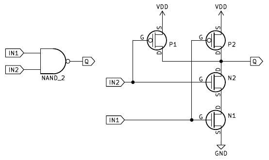
Instances: AFEG AGYN AJEP ANOS AREV AVER AVET BADU BAGE BAGU BALE BARE BEGE BEJU BENA BESO BEXU BOKU BOPY BORO BOSU BOTY BUDO BUGU BUPO BYLA CABA CAZE CEPU CORO CUFU DACE DAXA DEFY DELA DEPU DERY DETA DOCU DOGE DOLA DOLE DULU DURU DYGE EDEL EFEF EGAD EKEM ELER ELOK EPYX ETOL EVYF FAPE FASY FEWA FOVO FOXE GAWA GETA GOLO GOPE GOVO GYLU HAWU HAWY HENU HOLA HOSO HOZU HUMA JORA JURE KAMU KEXU KOLA KOLE KORE KORY KOVU KUPO KYHU KYPA KYRY KYTO LABE LAFU LAKY LAMY LEBO LEKA LELA LEPY LERU LODO LOKO LOKY LOTO LOTY LOWA LUCE LUFY LUJA LUKE LUNU LUTU LYDE LYDU LYRA MADA MAJO MAME MENE MEZU MOFY MORY MOSY MUHO MUNE MYNU MYNY MYTO MYVY MYXA NADY NAJA NEXA NOGU NUTE NYHA NYXO PABE PAMO PAZO PECU PUHE PUME PYZU PYZY RABY RAFY RAGA RAJA RAJO RANO RAPE RAVU REHU RERA ROPE RORA RORY ROXU RUCA RUCE RUDU RUJA RUSY RUTO RUXA RYJA RYJY RYLU RYVO SEBO SEJA SENO SEPY SOHY SOLY SORO SUCA SUCO SUKY SUPU SURE SUZE SYWE TABY TACU TAFA TAME TAPO TEDE TEGU TENA TESO TOMA TOWA TUFO TULA TUPE TUWU TUXA TUXE TUXY TYGA TYKO TYRA TYVY UGAC UVER VABY VEXU VUME VUNE WAXO WEDE WEDY WEVO WOKA WUBU WUJA XALA XATO XELY XEXU XODO XOLE XUCY XUKU XYRU XYVE ZADO (225 total)
NAND3
NAND gate with three inputs.
 |
|
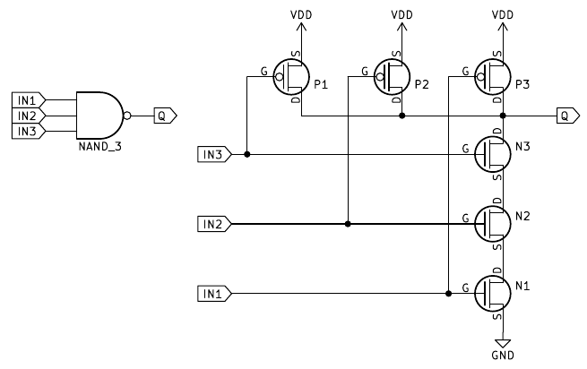
Instances: BOTA BUGE BUTO BYCU DEGO DYDU DYKA EFYL EGOM LARA LAVO MEXU MOCE MODY MYZU NYDY PYHU ROZE TOGA TOME TYNO UPOJ WOLY WUTU XAGE XOFO YBEZ YDUG YGEM YLOZ (30 total)
NAND4
NAND gate with four inputs.
 |
|
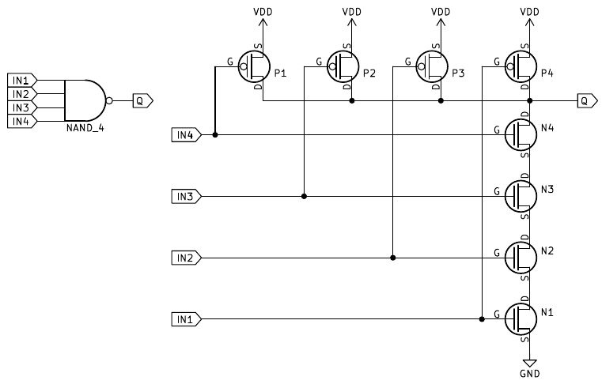
Instances: ACOM ATOZ BEJA CUGU CUPE CUVA DAFY DAMY DATU DAZA DEJY DEWA DEWY DEZO DOGU DONA DUFE DUNO DUPO DURA DUVU EGEN EMAX EMOS ESOT ETUF EXAT FOCO GANY GEBU GUNA REFA ROLO RONE SARA SUVU TEGY TOPE TUGE TYJU URYS UWAM WOMU (43 total)
NAND5
NAND gate with fife inputs.
 |
|
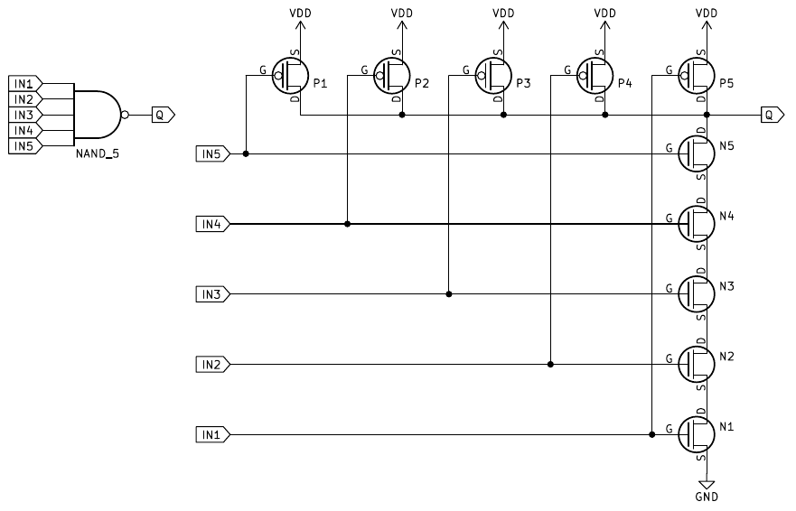
Instances: APER CUTY ERAT FEFY FOVE HUFU NOGY PAFU PALO PUKY VAMA WAGE WATE WAVU WEBU WETA WETY WOFA WORU WYBO WYLE WYVO XUGU (23 total)
NAND6
NAND gate with six inputs.
 |
|
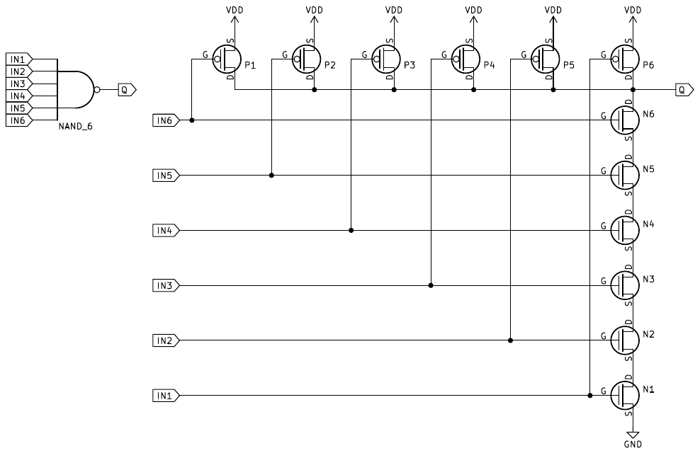
Instances: NAVO WOTA (2 total)
NAND7
NAND gate with seven inputs.
 |
|
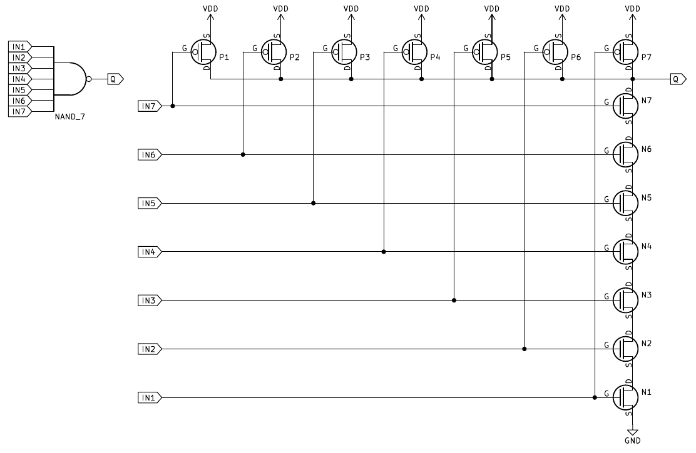
Instances: TEBO TECE TOZU TUNA VOKU WALE (6 total)
NOR gates
NOR2
NOR gate with two inputs.
 |
|
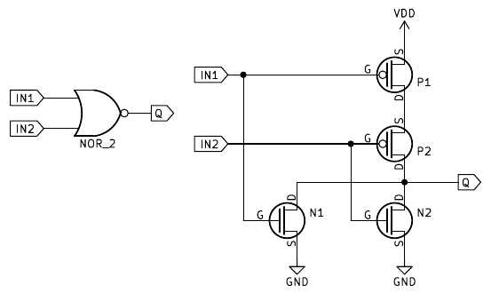
Instances: AFAR AFAS AFUX AGOR AJAV ANOM APAJ APYS ARES ATAT ATYN AVUF AWOD BARO BEFU BELU BEVO BEWO BOLA BOVU BOXO BOXU BUNO BURY BYLE CAFY CAMA CAVA CAXE CAXO CEVU COLO CORA COSO COTU COVO COVY CUGE CYKA DACU DADO DAFA DANU DARA DECO DERA DODY DOJU DOMO DOVE DOXA DOZA DUGO DUJA DUJU DUSA DUTU DYPU DYTA DYVA EDAF EFOR EGET EGYP ELUF EMET EMOL EMOR ENEC ENOK ENUT EPUK EPYK ESEL ETAN EVOL EZUK FAKO FALE FEMY FENY FOXA FULO FURY FUVO GAMO GATO GEFO GEGA GEGE GEMY GOFU GOKA GONO GUNY GUTE GUTU GUVA GUZA GUZE GUZY GYFU GYFY HEFA HEFO HERA HERY HOBU HOLY HURY HYLY HYPA HYVU JADO KABU KAJU KALA KALE KAPO KASY KAZA KETO KORU KOTY KUJO KUKU KYBO KYBU KYWE LAMA LECO LEVA LOSO LUPA LYNY MEGO MENY MERY MOCA MUDE NADA NAFY NAXY NERO NULY PAGU PAHY PANY PASO POME PUKU PUXY PYMA REPA RESY ROGY ROLU RORE RUGY RULO RUNE RYDA RYPU SADU SAKY SEKO SEZE SOBY SOGU SULY SYKE TADY TAMU TEFA TUSO TYMU URUN USUF VEKU VUZA WOJO XANE XATY XOJA (184 total)
NOR3
NOR gate with three inputs.
 |
|
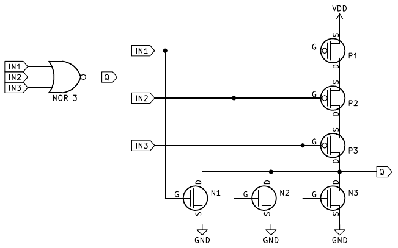
Instances: AJUJ BAPY BATE BENY CAPY CORY DEME DODA DUDU DYRU ELAR EMOF ETAR ETAT ETOV EVER FOWA FURA GAFU GAPY GEPY GUDA GYRE GYRY JUPU KOMA MUDA MYSO NYXU POKA RYDY SECA SYCU TUVO UFOL VYBO XALY (37 total)
NOR4
NOR gate with four inputs.
 |
|
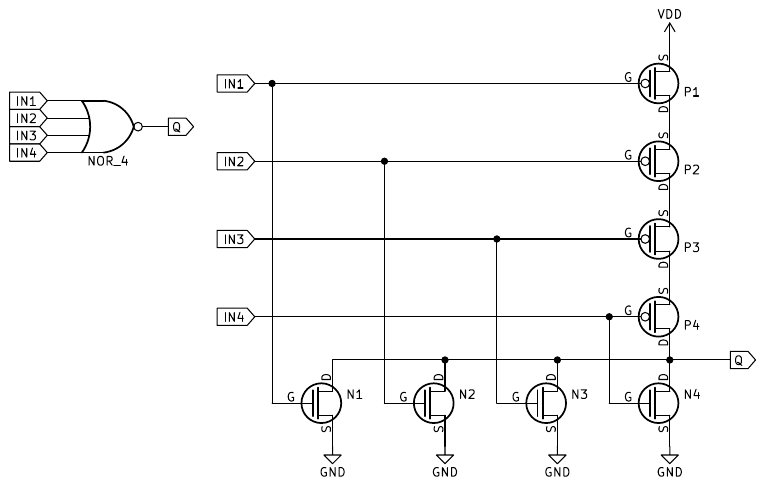
Instances: CEHU COGY CYCO CYVY DAJE DAMA EKES EWAM FEHA FYMA GOPA HAFE KORO SEMY SOVU SUBO SUTU XEBA YDOT YKOK YLEV YNAZ YTUB YWAP YWOS ZADU ZAKO ZORO ZURE (29 total)
NOR5
NOR gate with five inputs.
 |
|
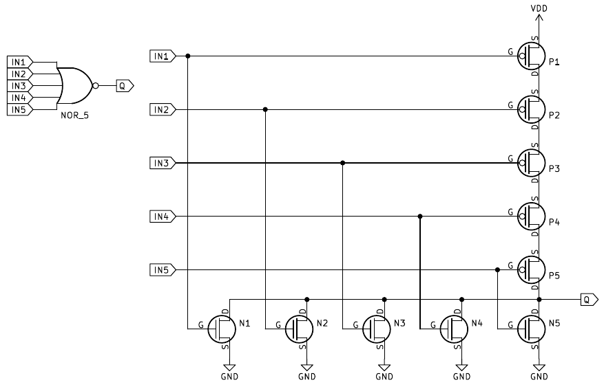
Instances: DARO EMYR FUTE GEVY HANO HOCA SARE (7 total)
NOR6
NOR gate with six inputs.
 |
|
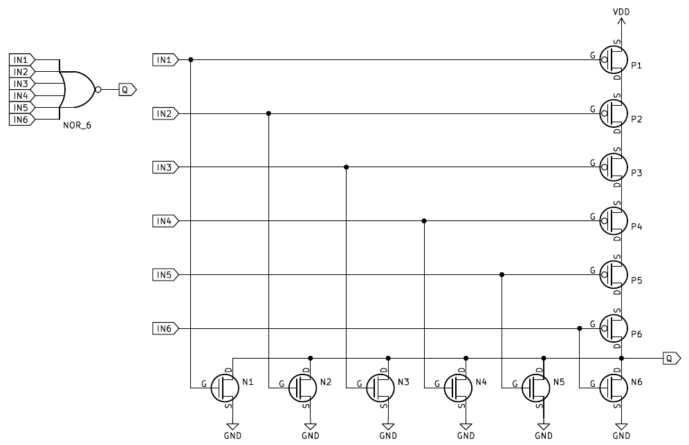
Instances: AMUS TYRO (2 total)
NOR8
NOR gate with eight inputs.
 |
|
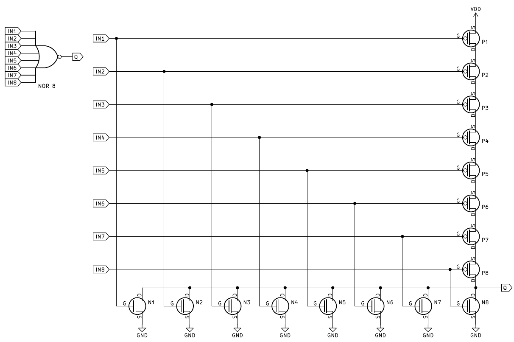
Instances: NERU TULO (2 total)
AND gates
AND2
AND gate with two inputs.
 |
|
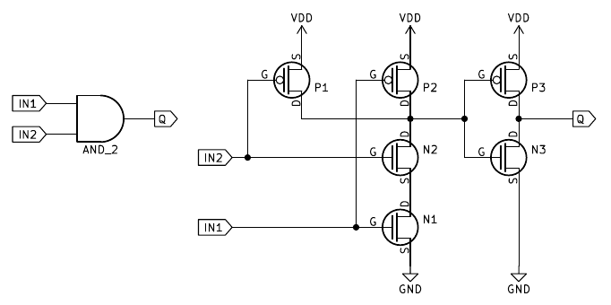
Instances: ABOV ACEG ACEN ACYL AFUG AFYR AGOF AJON AJUX AKOF AMAB AMAC AMOP AMOV ANAN ANAP ANUJ ANYP ANYV APYR AROR ARUR ASOG ASOK ASON ASUL ATUV AVOG AZEM BACU BAKY BAPU BARY BASO BEDY BELY BOJE BOPA BOZA BUVO BUVU BUZA BYKA BYZA BYZY CABY CARO CARY CENU COMO COTE COVU COWE CYFA CYSE DACO DEBY DOKA DORA DORE DOSA DOXY DYMU DYRY EFOP EFOT EGOG EJYF EKEZ EMAR ENEK ENUF EREG ETOK ETUC EVOF EXUC EZOZ FEGA FOKE FOPU FOTO FUJY GAME GAXU GEDO GEJO GERE GETU GOKO HAFU HAGA HUDA HUMO HUPA JAFA JEHY JENU JOCY KAVO KAXY KEVY KOKO KOTA KYFU LAVY LURY META MOFU MOLU MUMY MYXE NETA NUNY POTU POVA POWU RACA RAJY ROCY RUTA RYCE RYFU SAMO SAZO SAZU SEFA SEFU SEMA SEPA SERE SOGO SOHO SOSE SUKE SUMO SUNA SURY TADE TAPA TARU TAXY TEXO TOBA TOBE TODE TOPU TUCA TUFA TUJA TUTO TUTU TYBA UMUT UNOR UNUT VAPE VELY VETU VUSO VYRE WAFA WAFU WARU WAXU WAZU WEFY WEKO WEXE WODU WOXA WUZA WYXY WYZE XAJO XEZE XOMA XONO XUFA XUFY XUKE XULA XUTO XYLE XYLY XYVO YLYC YNYC ZAJE ZAPY ZOLE ZOVY ZUBU ZUFA ZUKO ZYGA ZYKY (197 total)
AND3
AND gate with three inputs.
 |
|
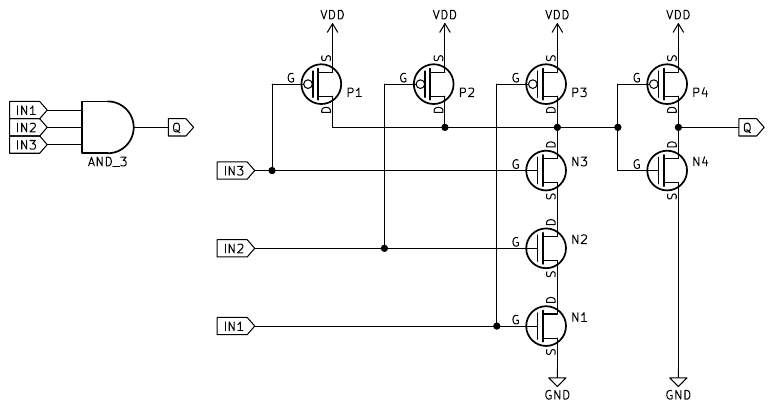
Instances: ASYT BAVE BUSO CARE COZE CYLU EJEX GUKO HONY HYNO KOTE KYVO LARU LEDO LOPU LYKY LYTA MOVU NUMA NUXO NYPO POBU PYGA RYFO SANO TOZA TUMA TUNY TYFA TYME VATA VOLO VUGO VYRO WUKU YULA (36 total)
AND4
AND gate with four inputs.
 |
|
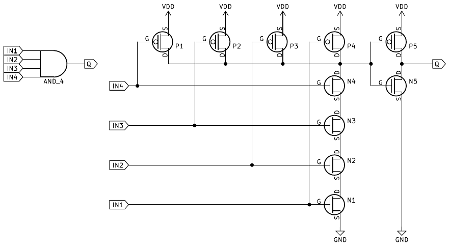
Instances: ACAT DOFA EKAG FETO NOKO RACU SANU SAPA SORA TACE TAGY TAPE TEDA TEKY TEXE TUBY UCOM UFEG (18 total)
OR gates
OR2
OR gate with two inputs.
 |
|
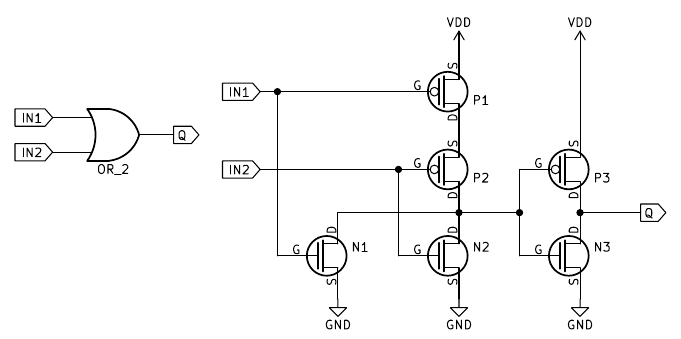
Instances: ABAK APET ASEN ATYS AVOR BEZY BONU BOTO BOXE BYBY BYJU CADO CAHO CAKE CATO CECU CELA CEMY DATO DAWA DUBU DUPY DYWE EFEV ENUR ERYF EVUR FAVO FEPO FEVE FOKO FUMA FUVA GAKE GAPE GAVA GEDE GEPO GEXA GEZE GORO GOVU GUFY GUKY GURU GUVE GYGA HAMY HASU HEZE HOCU HYLE HYPO JADE JYRO KABA KARU KEKA KEKO KYKU MOTY MUXE MUZU NABE NEVY PAGO PUVA RAKE RELA REPU ROKO RUTE RYNO SACU SAKO SATO SAWU SEDO SEJY SEME SEMU SEWO SOFY SULO SYBU SYMA SYNU TYSO UPYF VUSA WACY WEGO WEJA WOHU WUTO WYLA WYXO XUJO XYLA (99 total)
OR3
OR gate with three inputs.
 |
|
Instances: ASAM BEBU BETA ESYK FEGY FELO FYGO HOFO KAKE MEFU MEVE MYZO PATY PERO RUDA RUJU TABA TEVO TEVY TORY VOTO VYSA WOPE (23 total)
OR4
OR gate with four inputs.
 |
|
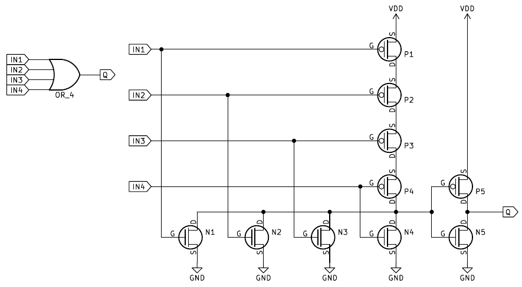
Instances: ATEG AWET BERY KERY (4 total)
XNOR
XNOR gate with two inputs.
 |
|
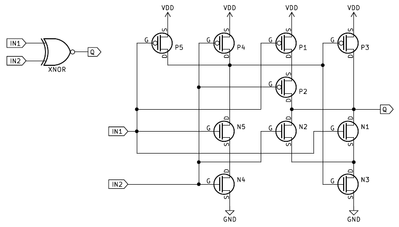
Instances: HURA MYLO NAZE NEVU NEZO NOJO NONO NORY NUPA NYTU PAGA PASE PEBO PEZO POMO PUHO PUWU SOZU SUHA SYBY (20 total)
XOR
XOR gate with two inputs.
 |
|
Instances: BAHU BAZY BOBA BORE BUMY BUVY CALE CEKO CEVA COLA COLU CONY CULU CYLE CYVU DAGA DAGU DAWU DESO DETY DOZO DOZY DUCU DUSE DUZE DYME DYZE EBEF EDYM EJAW EJOT EMYB ESAJ EWOK EWUD FESO FOKY FURE FUZU FYVA GABU GAFE GASU GELA GEVE GOHO GOLA GOLY GOPO GUDE GUZO GYLO HEFY KEFE MAGU RASY REDA ROKU RYBO RYME SAKE SYFU TERY TUCY TYDE TYGE TYKU WAGO WOJU WYZA XAHA XAVU XEGY XEJU XENY XEVA XORA XOSU XUCO YBOX YCAH YDAJ YFOP YFUN YHOK YMAM YPUK YTYP YVAC YVAP YVUZ ZAHA ZAKU ZARE ZATE ZEBA ZEDA ZEFE ZEJO ZEMU ZOGY ZOKY ZULO ZUVU ZUZA ZUZY ZYGO ZYKU ZYPU ZYWU (110 total)
Compound logic gates
AO1
2-1 AND-OR two-level compound gate.
Name in DMG-CPU-Inside: AO3
 |
|
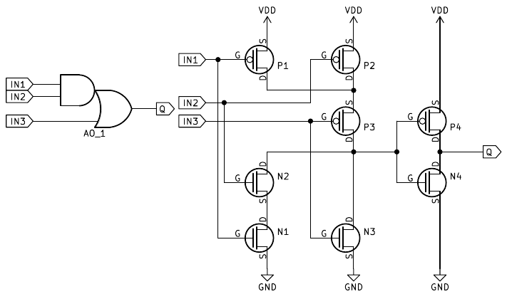
Instances: LAGU LOXO TYNU WYJA (4 total)
AO2
2-2 AND-OR two-level compound gate.
Name in DMG-CPU-Inside: AOI_MUX_2
 |
|
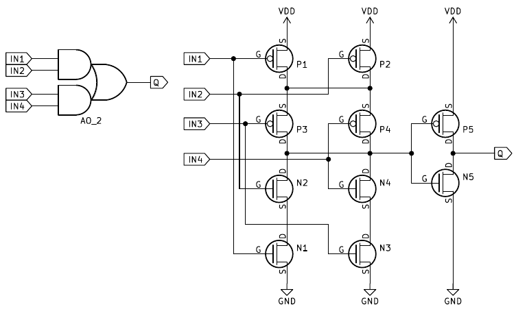
Instances: APAG DOKY EDYF ELAF ETEF ETUP FARU FOLE FOPY GAFA GEJY HESU HETO HYTO JUFY KAHE KAVU KUPA (18 total)
AO3
2-2-2 AND-OR two-level compound gate.
Name in DMG-CPU-Inside: AOI_MUX_3
 |
|
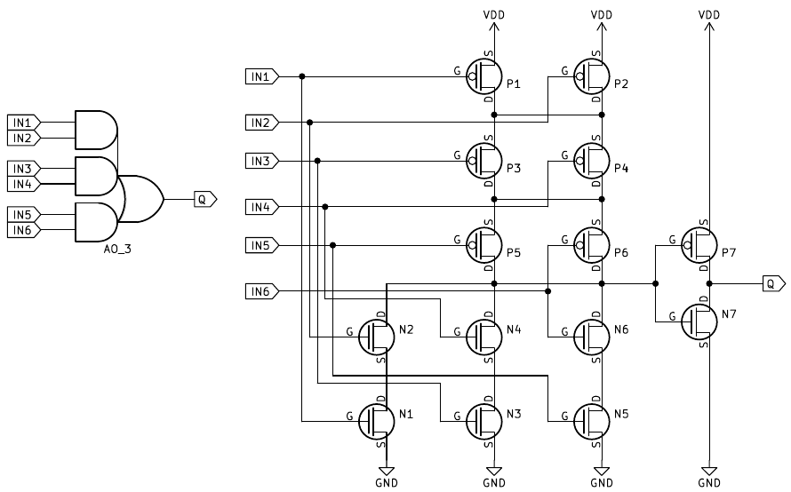
Instances: EVUG EZAG (2 total)
AO4
2-2-2-2 AND-OR two-level compound gate.
Name in DMG-CPU-Inside: AOI_MUX_4
 |
|
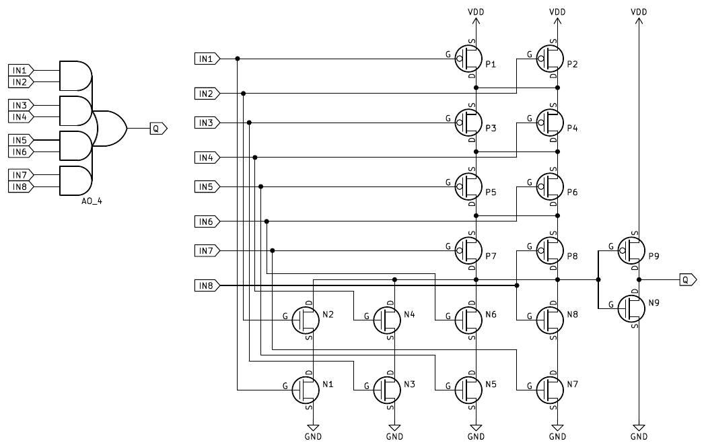
Instances: DARY DUNA ELYX EXES MOKA MUFA NELO NURA SUKO WALY WUFU (11 total)
AO6
2-2-2-2-2-2 AND-OR two-level compound gate.
Name in DMG-CPU-Inside: AOI_MUX_6
 |
|
Instances: ETYR (1 total)
OAI
2-1 OR-AND-INVERT two-level compound gate.
Name in DMG-CPU-Inside: NAO
 |
|
Instances: CUFE (1 total)
OA
2-1 OR-AND two-level compound gate.
Name in DMG-CPU-Inside: OA3
 |
|
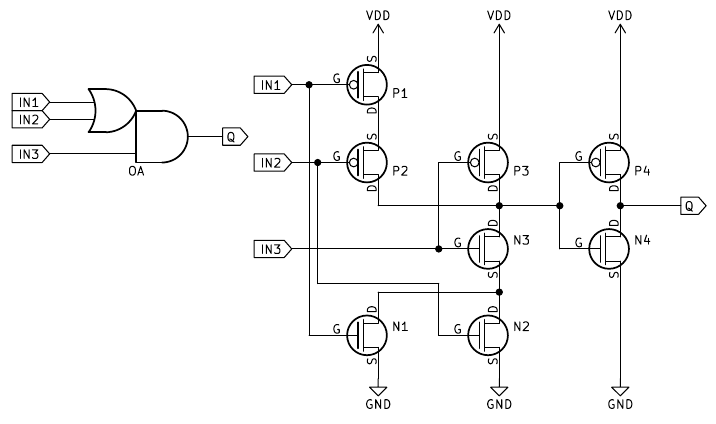
Instances: AGUT BYHA COHY DAJU DUMO DYBO DYLY EFAK EGUV EHUJ (10 total)
MUXI
Inverting multiplexer with two inputs.
 |
|
Instances: CAVE COPO CUZO DATE DAZY KENA NYKU PETU RATO REFU ROKE SALA SOCE SYRU TECY TEKO UBAL UJYV UKAP (19 total)
MUX
Multiplexer with two inputs.
 |
|
Instances: AFUM AGYL AMER AMET APOK ASUR ATEM ATOL ATOV ATUR ATYR AXOL BENO BEZE BOLE BULE CELY EZUL FEME GALE MALE MANO MASU MOJY MUCE PACY PAMY PAWE PEGE PELO POBE PONO PUGU PULY PUTE RORU SALE TAZY TOLE TYHO TYJY ULUR (42 total)
Arithmetic gates
HALF_ADD
Half adder.
 |
|
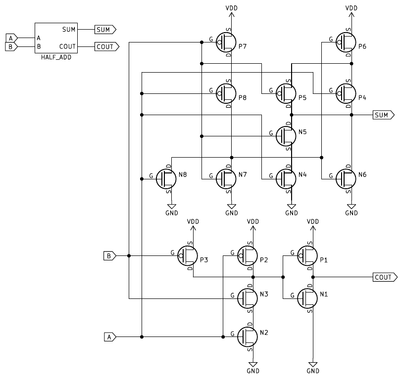
Instances: ATAD FAFO (2 total)
FULL_ADD
Full adder.
 |
|
Instances: ABOD ACUL APYH BABE BEHU BEWY BYCA CORU DABA DOTO DULE DYXE ECAB EFYK EJOK EMUX ENEF ERUC ETAM ETEK FECO FEGO FUWA GEVA GOJU GOPU GUXA GYKY HALU HEXO JORY JULE WUHU (33 total)
Tri-state drivers
TRI_INVERTER
Tri-state inverter.
This cell comes in two very similar looking shapes: One has an active-high enable input; the other has an active-low enable input.

  |
|
Instances with ENA: BADE BATY BAVA BEZU BUNE CORE CUGY DAME DASO DESA DESY DETU DUDE DUGU EFAB ELUV ETAK EVOK NABO NELA NOLA NUVY PADO PANE PARE PEGY POLY PUSO PYRE RACY RAJU RAKU RALY RARO RARU RASE RAVY REBA REJY REKA REMA REMO RESO RESU RETA REVA REXU ROCE RODY ROFO ROHA ROMY ROPU ROTA ROTE ROVA ROWE ROWU RUGA RUPY RUSA RYBU RYDO RYKE RYLA RYNE SALU SAPU SAWA SEGO SEPU SETE SEZU SOKU SOMU SOSY SOTU SUPE SUPO SURO SUVO SYPU TAKU TATU TAWU TEBY TEMU TOBO TOKU TUSE TYJA UPUG VAPY VEJY VURY WUGA (96 total)
Instances with ENA: ABEM ACOT ADYB AFEB AFEN AFOX AFOZ AGAG AGYK AHAC AHUM AJAL AJAN AJEC AKAJ AKOD AKUX AKYH ALEL AMAD AMUH AMUV AMYD ANOC ANUM APOB APOC APON APYV ARAR ARAS ARUX ARYN ASOX ASUM ASUZ ATAJ ATAX ATEL ATER ATUM AVEB AVEK AVUD AWAT AWED AWOS AXEC AXEM AXEP AXER AZOZ AZYP BACE BACO BAPE BASA BASY BAXE BAXU BAZU BEDA BEFE BEMO BENU BETU BETY BEVY BOCA BOCY BODU BOMO BOSO BOVE BOWO BUBO BUCE BUHU BUJA BUJY BUKY BUMA BUPY BUSE BUZU BYDO BYME BYNY BYPY BYRO BYTU CADA CAGA CAKO CAPU CASE CASY CATA CAVU CAWO CECY CEDU CEGA CEGY CEKA CELU CERE CETA CETU COCE COFO COHO COLY COTO COVE COXO CUBE CUBO CUCA CUCU CUDA CUDU CUDY CUGA CUJE CURY CUSA CUVU CUZU CYBY CYME CYPO CYRO DAFE DAHU DALO DALY DAMU DAVA DEMU DEMY DEXO DEZU DOBO DODE DONY DOPA DOWA DOXE DUHO DUVE DUZA DYGO DYNY DYSO ECAL EDOL EDOS EFUD EFUS EGEZ EKOB ELEP ELUG ELYC ENAP ERAF EREW ETAD ETEG EVAD EVAX EVYT EXYF EZOC FABY FACO FAGO FAJY FAKU FAMU FANA FAPY FARO FATE FAVA FEGU FERA FESA FETU FEVU FOBY FODO FORU FOSE FOTE FOZE FUGU FUGY FUHE FUSY FUTO FYDU FYKE FYKY FYZY GADU GAKA GAKY GAMA GARO GATE GAVO GAZO GECA GEDA GEFU GEFY GEGU GEKO GEMA GENE GERA GERO GOBA GOBY GODE GODO GODU GOFO GOJE GOJY GOME GONU GOSE GOTU GUNE GUSE GYBU GYKA GYPE GYZA GYZO HACA HACU HAMU HAPY HAVU HEDA HERE HEVE HEWA HOGE HONO HOPE HORO HOWU HUCO HUFO HUNA HUPE HUVU HYRE HYRY JACA JARO JEKE JEKU JEZA JOFO JOKU JUDE JUKE JURA JUVY JYNE JYSE KAFU KAKU KAMO KAMY KARY KEMA KESY KETA KOCE KOGE KORA KUMO KURO KUVE KYRO KYVU LACE LAJU LARY LEBA LELU LEPA LOBE LODE LODY LOKA LOLE LOVA LUGA LUKY LYCO LYKA LYZA MARA MEGA MELE MERA MOKO MUFE MUKA MULY PABA PELA PODA POFO POLO POTE PUFY PUNU PUZO PYGU RACE RAZU REDO REDY RESE RETU RUMO RUSE RUVO RYKO RYMA RYNA RYSU SAFO SASY SEVU TAJU TAVO TEPE VACE VAFE VAHA VATO VAZU VEGA VEHA VEVY VEZA VOGU VOJO VOKE VOVO VULO VYNE VYTO WABA WABO WABU WACU WAGA WAJA WAKO WAMA WANA WAPE WARE WASA WATO WAVO WAWE WAXA WAXE WEHE WEJO WENU WEPY WERE WERU WEZA WEZE WOCY WOJY WOKO WOLU WONY WOWA WOXY WUCO WUDO WUJU WUKA WULE WUNE WUVA WUWE WUXE WUXU WUZU WUZY WYDA WYDU WYGA WYGO WYJU WYKY WYPO WYSE WYWY XAHE XAJU XAKY XAMO XARY XAWO XAXA XEBU XECA XEHE XEJA XERO XOBA XOBO XODY XOKE XONU XOPO XUBY XULO XUNO XUXU XYBO XYNE XYRA XYRE XYTO YBUK YHAL YJEM YKOZ YNEV YPOZ YRAD YVUC YWAV ZABY ZAJA ZAKY ZAMY ZARO ZATO ZAVE ZAXA ZECE ZEDY ZETU ZEXE ZOJY ZOPU ZOZO ZUDO ZUFE ZUFO ZUGA ZUKE ZUMO ZUMU ZYFA ZYPO ZYSU ZYTO (478 total)
TRI_BUFFER
Tri-state buffer with active-low enable input.
There is one external connection always made on this cell (see pink line in the picture) that seem to be necessary for it to work.
 |
|
Instances: AJOV AKAN ANAR AZUV BYNA BYNE BYXE DEVE FYRA KEJO LEFY LOFA LORA LYNA MAPU NEFE RALA ROPA RUJO SAJO SEDU SEKE SOSA SOTE SUGU SUZA SYWA SYZU TAHY TAWO TAXO TAZU TEME TEMY TESU TEWA TEWU TOFA TOVU TUTE TUTY TYGO XABU XACA XAGU XELE XEPU XUNA XUVO XYGU YFAP YPON YTUX YWEG ZEHA ZYSA (56 total)
Storage elements
SR-LATCH
Set/reset latch.
These are wrongly labelled OR and AND gates in the schematics. Rgalland just figured out the correct function of these cells.
  |
|
Instances of NAND latches: BUTA FEMU GEXU GUGU JERY LONY TAKA (7 total)
Instances of NOR latches: ASOL BESU CYTO DALA DANE EROX FOZU FYFO GENA GOFY HAZO JEME KEZU LYXE POKY PYNU REJO ROXY RUPO TUBO WUJE WUSA XYMU (23 total)
D-LATCH - Variant A
Gated data latch.
There are two enable inputs to this cell. They need to be inverted towards each other. There is usually an inverter cell nearby that generates the inverted enable signal.
There are instances of this cell that have their Q output stripped off. Those stripped cells can have an unrelated net run through the row where the Q output would have been. The cells named MYTU and MOFO are two examples of that.
Name in DMG-CPU-Inside: DFF2
 |
|
Instances with Q: ABEG ABOP ABUG ABUX ACEP AFUT AFYM AFYX AMES ANED APEV AROF AXUV AZAP BADA BADO BAXO BECA BEXY BOXA BOZU BUHE BULU BUNA BYHE BYHU CADU CAJU CAJY CANA CAPO CEBO COMA CONO CUFA CUFO CUMU CUZA DAFU DEBA DEPO DESE DEVY DEWU DUHA DUNY DYSY EBEX EKAP EKOP ETAV ETYM FEFA FOFO FOGO FOXY FUZO FYHY FYSU GABO GACY GECU GESY GOHU GOMO GORU GULE GYHO GYNO LAWO LEPU LOSE LUGU LUNE LUXO MARU MAXY MENA MOGY MORU MOSA MOXY MUKE NAFA NUSY NYDO NYGY PARA PAVO POKU PULA PYLU PYNE WANU WYSO WYTE XABO XAKU XALO XANA XAVE XAZY XEFE XEGE XEGU XERU XOSY XOTE XOTU XOVA XUFO XUFU XUKY XUPO XUSO XUTE XYFE XYGO XYJU XYNA XYNU XYZE YBER YBOG YGUM YGUS YJEX YKUK YLOR YLOV YSOK YWAK YZAB YZEP YZOR YZOS ZAFU ZENE ZEXO ZEZY ZONY ZUBE ZUMY ZURO ZURY ZYLU ZYTY ZYVE (148 total)
Instances without Q: LEGU LUZO MEGU MOFO MUKU MYJY MYTU NASA NEFO NUDU PEBA PEFO PUDU RAMA RAMU REWO ROKA RYDU SAJA SEGA SELE SEMO SUNY SUTO (24 total)
D-LATCH - Variant B
Gated data latch.
Name in DMG-CPU-Inside: LATCH
 |
|
Instances: ALOR ALYR APUR ARET AROS ARYM ATEV AVYS AWOB CYRA ECED KAPA KEJA KEVU KOLO LOBU LONU LUMY LUNO LYSA MATY MOPO NEJY NUTY NYRE PATE PAVY RAXY RONY RUPA SAGO SAZY SELO SODY SOMA WONE WYNO XAFU XYKY YCEB YDYV YRUM YSES YSEX YVEL ZAXE ZECA ZUCA ZUVE (49 total)
DR-LATCH
Gated data latch with active-low reset.
There are two enable inputs to this cell. They need to be inverted towards each other. There is usually an inverter cell nearby that generates the inverted enable signal.
Name in DMG-CPU-Inside: DTFF
 |
|
Instances: ADEK ADYK AFUR AGER ALEF ANAZ ANEV APEG APOS APUK ARAX ATUF AVAF BAFO BAKE BAMY BANA BANY BEDU BEFO BEGU BEMY BEPA BEPU BERA BOFA BOGU BOKO BORA BOTU BUDY BUME BUMO BYGA BYRE CABU CENA CESO CESY CEVO COZU CUNY CUSY CUVO CUVY CUZY CYFO CYWE CYXU DAKE DANY DATY DAZO DEDE DEPY DESU DUHY DUKO DUPE DURY DUZU DYBY DYCA DYFU EBOW EHYN EJUF EMER EMOK ENAD ENOR EPUM ERAZ EROL ETAP ETYJ EXUK EZUF EZYK FAXA FAXE FAZU FEDE FEDY FERO FESY FETA FEZU FOFE FOHA FOKA FOME FORA FORE FOTY FOVA FOZY FUBY FUJO FUNY FUSA FYCA FYMO FYTO FYTY GADY GAFO GAGE GARU GATA GAVE GAVU GAVY GAZA GEDU GEKY GODA GOGO GOKY GOXU GOZO GUBO GUFE GUMY GUPU GURA GUXE GYPU HAVA HODY HOGA HORE HOTO HUKY HYFU JACY JAFY JAKY JAMY JANY JARE JATY JAXA JAXO JEFE JEFU JEMO JENA JERO JETY JOMA JOPU JOVE JOVY JUPY JUSA JUZY JYPO KANA KOGA KOGU MEBY MELA MUVO MYCE MYPA MYPU NAFU NAGA NENE NESO NOFE NOKE NUKA NUKU NULO NYRO RAHA REFE ROXE RUFO RUGU SALO SEDY SOTA SYRY VAFA VEVO VUCE VYXE WECO WEDU WELO WEXU WOKY WOTE WUHA WYDE WYMO WYNA XABE XAFO XAKO XECY XEKA XEPA XEPE XERE XEXA XOMY XONA XOLY XUNY XURY XUVY XUZO XYBA XYLO XYMO YBED YCOL YGAJ YLAH YMEM YNEP YPOD YRAC YROP YVAG YZOF ZALA ZECU ZESA ZOGO ZOLA ZOLY ZULU ZYJO (238 total)
DFFR - Variant A
Single-edge-triggered data flip-flop with active-low asynchronous reset.
There are two clock inputs to this cell. They need to be inverted towards each other. There is usually an inverter cell nearby that generates the inverted clock. The flip-flop triggers on a positive edge of CLK and a negative edge of CLK.
There is one external connection always made on this cell (see pink line in the picture) that seem to be necessary for it to work.
This variant is similar to variant B, but it is missing the Q output. Furthermore, it is two rows shorter.
TODO: Not really sure about clock input polarity.
Name in DMG-CPU-Inside: DTFF
 |
|
Instances: DEFA DELE DEVA DEXE DOFY DOLY EDOK EPYR ETER EXAP FAXO GALO GELE GYME HELE HOPA HORA JAPE JETE JODE JYME KARE POJU POWY POXA POZO PULO PYJU PYZO RAWU (30 total)
DFFR - Variant B
Single-edge-triggered data flip-flop with active-low asynchronous reset.
There are two clock inputs to this cell. They need to be inverted towards each other. There is usually an inverter cell nearby that generates the inverted clock. The flip-flop triggers on a positive edge of CLK and a negative edge of CLK. Sometimes the clock inputs are driven by the Q and Q outputs of another flip-flop of the same variant.
There is one external connection always made on this cell (see pink line in the picture) that seem to be necessary for it to work.
Name in DMG-CPU-Inside: DTFF
 |
|
Instances: AFER CAGY DAPE DYVE EROS XADU XECU XEDY XOBE YDUF ZUZE (11 total)
DFFR - Variant B+
Positive-edge-triggered data flip-flop with active-low asynchronous reset.
This cell is basically the same as variant B but with an extension at the top. This extension seems to generate the inverted clock that is required.
There are three external connections always made on this cell (see cyan, green and pink lines in the picture) that seem to be necessary for it to work. The cyan and green connections feed the positive and negative clocks generated by the extension to where they would be connected to if this was a cell of variant B without extension. There is not a single instance of this cell that has those two clock connections crossed, which means all instances trigger on a positive clock edge.
Name in DMG-CPU-Inside: DTFF
 |
|
Instances: ABEL ACEF AGEM AJER AMUT ANEL APUG ATEP ATYK AVOK AZET AZUS BANO BARA BATU BAZA BEGO BESE BEXA BOWY BURO BUSA BYBA BYLU BYTE CAFA CALO CALY CANO CARU CATU CAZA CEDY CEMO CENO CERO CERY CEXO COFY COMY COTY CULY CUXY CYDE CYLO CYRE DALE DAVO DEKO DEMO DERE DETE DEZY DOBA DOKE DOME DOPE DORY DOSE DOTA DURE DUWO DYBE EBOJ EFAL EFAR EFUZ EGAV ELOX ELYN ELYS EPOR ERUS ERUT ESEP ESUT ETAF EXEL EXUQ EZEC EZEF FAHA FARE FEKU FETY FEXU FOBA FONO FONY FOSY FUGO FYNO FYTE GARA GARY GATY GONE GORA GOSO GOTA GYKO GYRA GYSU GYTA HADA HAPE HENO HEPA HEPO HEZU HORY HUNO HYRO JAJU JALE JAVO JEPE JESO JOPA JOTO JUTE JUXE JYNA KALY KECY KELY KERU KETU KOMU KOZY KUKO KUTA KUZY KYME KYNO KYWY LAFO LAXU LEBE LEMA LENE LEXA LOVU LOVY LUCA LUVY LYDO LYZU MAKA MATO MATU MEDA MESU MOBA MUGU MURU MUTY MUWY MYTA MYTE MYRO NAKY NAPO NEFY NOPA NUNU NUTO NYDU NYKA NYKE NYKO NYPE NYVA NYZE PAHO PETO POPU PORY PUXA PYCO PYGO PYLO PYRO RENE ROGA ROPO RUBU RUTU RYFA RYKU SABO SABU SAMY SARY SAVY SAXO SEBA SETA SOBU SOLA SOPU SOTO SOVY SUBU SUDA SUDE SUFY SYBE SYGU TAHA TAKO TAMA TATE TAXA TEKA TEKE TELU TERO TERU TESE TEPU TOBU TOFE TOZO TOXE TUFU TUGO TUHU TUKY TULU TULY TYFO TYPO TYRU TYRY TYVA UFOR UGOT UKET UKUP UNER UNYK UPOF VENA VOGA VONU VUJO VYMU VYNO VYZO WAFY WAPO WEWY WOBO WODY WOMY WOSU WUVU WYKA WYKO XEHO XODU XOLO XUDY XUVA XYDO YFEL (267 total)
DFFSR
Positive-edge-triggered data flip-flop with active-low asynchronous set and reset.
There are four external connections always made on this cell (see orange, cyan, green and pink lines in the picture) that seem to be necessary for it to work.
Name in DMG-CPU-Inside: DFF3
 |
|
Instances: AXAN AGEZ BEKU CUBA DEGU DOJO DOVU DYGY DYRA EDER EDUL EJAB ELUX EROD EVAB EXAC FABU FEDO FELY FUDE GOGA HAVO HOLU HOPO HYKA HYXU JEFA JOLU JOTA JYKA LALU LEFE LESU LOPE LYME MACU MASO MODA MODU MOJU MYDE NATY NEDA NEPO NOZO NUKE NURO NYBO NYLU PALU PEFU PYBO PYJO RALU ROSA RUGO RYSA SADY SATA SETU SOBO SOHU SOMY TACA TOMY UBUL ULAK VAFO VANU VARE VAVA VEZO VOSA VUMO VUPY WEBA WODA WORA WUFY WURU WYFU WYHO XETE (83 total)
TFFD
Negative-edge-triggered toggle flip-flop with active-high asynchronous data load.
This flip-flop is used for counters that can be loaded with a value.
There are four external connections always made on this cell (see orange, cyan, green and pink lines in the picture) that seem to be necessary for it to work.
Name in DMG-CPU-Inside: COUNT
 |
|
Instances: AKYD BACY BOVY BUVA BYRA CAJA CAME CAVY CAXY CEDO CERA COFE CONU COPA COPU CUNA CUNO CUPO CURA CYPU CYVO DANO DENA DOGO DONE DYNU EDOP EKOV EMUS ERAM ERYC EVAK EZOF FATY FAVE FAVY FEKO FENA FENO FERU FETE FEVA FOMY FORO FORY FUXO FYLO FYRO FYRU GANE GANO GAPO GATU GAXE GEMO GEVO GOCA HAFO HEMY HEPU HERO HEVO HEVY HOKO HYFE HYKE JAPU JEMA JEVY JONA JORE JOVA JYCO JYFU JYRE JYTY KAFO KEJU KEMU KENO KENU KEPA KERA KEZA KUNU KUPE KUTU KYGU KYNA NUGA PEDA PERU POVY RAGE RATE REGA RUBY (97 total)
I/O buffers
IOBUFFER - Variant A
Input/output buffer with open-drain/-source capability.
This cell is found all around the edge of the chip and is rotated (not mirrored!) so that the three connections face inwards.
 |
|
Instances: A0 A1 A2 A3 A4 A5 A6 A7 A8 A9 A10 A11 A12 A13 A14 A15 MCS MOE MWR RD WR (21 total)
IOBUFFER - Variant B
Input/output buffer with open-drain/-source capability and optional pull-up resistor.
This cell is found all around the edge of the chip and is rotated (not mirrored!) so that the four connections face inwards.
 |
|
Instances: D0 D1 D2 D3 D4 D5 D6 D7 MD0 MD1 MD2 MD3 MD4 MD5 MD6 MD7 P10 P11 P12 P13 SIN (21 total)
IOBUFFER - Variant C
Input/output buffer with open-drain/-source capability and optional pull-up resistor.
This cell is only used for SCK. In the die shot this picture was taken from, this pin is located at the right-hand side. For consistency across this documentation it is rotated here (not mirrored!).
 |
|
Instances: SCK (1 total)
IBUFFER
Simple inverting input buffer.
This cell is only used for RST, T1 and T2 (and an un-bonded unknown pad in the top-center of the die, that is directly connected to the CPU). In the die shot this picture was taken from, these pins (RST, T1 and T2) are located at the right-hand side. For consistency across this documentation it is rotated here (not mirrored!).
| 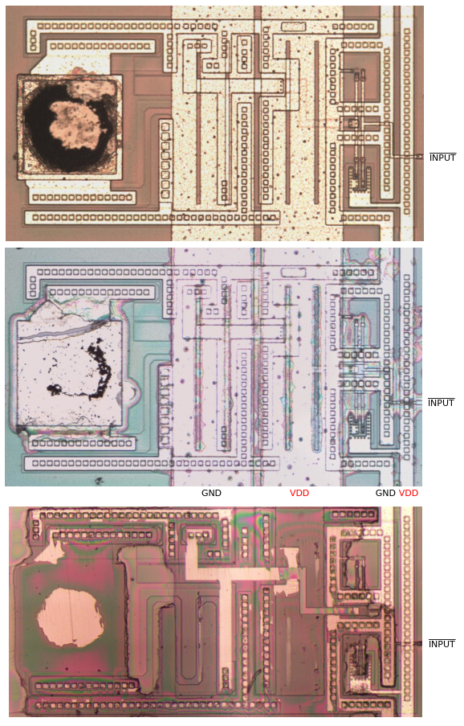 |
|
Instances: RST T1 T2 [[unlabeled cell between A10 and A11]] (4 total)
OBUFFER - Variant A
Simple inverting output buffer.
This cell is found all around the edge of the chip and is rotated (not mirrored!) so that the connection faces inwards.
 |
|
Instances: CP CPG CPL CS FR LD0 LD1 MA0 MA1 MA2 MA3 MA4 MA5 MA6 MA7 MA8 MA9 MA10 MA11 MA12 PHI S SOUT ST [[unlabeled cell between LD0 and CPG]] (25 total)
OBUFFER - Variant B
Output buffer with open-drain/-source capability.
This cell is only used for P14 and P15. In the die shot this picture was taken from, these pins are located in the bottom right corner. For consistency across this documentation it is rotated here (not mirrored!). Keep that in mind, especially for P14, where the DRV_HIGH connection is at the top and DRV_LOW is at the bottom.
 |
|
OSC
Oscillator input and output pads for connecting external crystal.
This cell is only used for XI/XO. In the die shot this picture was taken from, these pins are located at the right-hand side. For consistency across this documentation it is rotated here (not mirrored!).
 |
|
Instances: XI/XO (1 total)
AIBUFFER
Analog input buffer.
This cell is only used for VIN. In the die shot this picture was taken from, this pin is located at the bottom right. For consistency across this documentation it is rotated here (not mirrored!).
 |
|
Instances: VIN (1 total)
AOBUFFER
Analog output buffer.
This cell is only used for ROUT and LOUT. In the die shot this picture was taken from, these pins are located at the bottom right. For consistency across this documentation it is rotated here (not mirrored!).
 |
|
Instances: LOUT ROUT (2 total)
Other
SUPPLY
Constant supply.
The outputs of this cell are hardwired to VCC and GND. It is used to provide constant 1 and 0 signals to other cells. For example, it is used for the interrupt flags register: The PESU cell feeds a constant 1 into the data inputs of flip-flops (LOPE, UBUL, ...). Whenever the clock inputs of those flip-flops get triggered by an interrupt, the constant 1 gets clocked in.
 |
|
Instances: PESU RUNY VYPO WEFE [[unlabeled cell between BONE and BUFY]] (5 total)